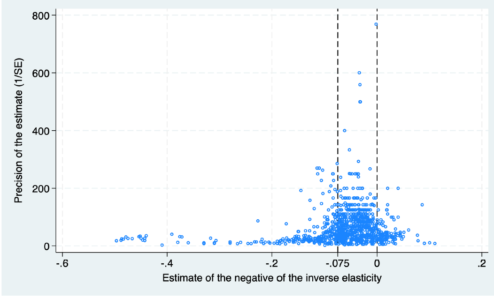

Abstract
This paper presents the first comprehensive meta-analysis of the elasticity of substitution between native and immigrant labor, drawing on 1,091 estimates from 41 studies. We find strong evidence of selective reporting: less precise estimates are systematically associated with lower reported elasticities. Correcting for this bias using meta-regression and selection methods raises the implied elasticity from about 13 to about 22, implying about 40% less wage pressure from immigration than uncorrected results suggest. Bayesian and frequentist model averaging show that heterogeneity is driven mainly by geographic scale, data granularity, and whether the sample is restricted to low-experience workers, while the choice between log(mean wage) and mean(log wage) plays a secondary role. Our best-practice estimates, which net out publication bias and prioritize the most granular data, imply an elasticity of about 17 in our baseline regional specification, lower than a simple bias correction but substantially higher than the uncorrected mean.
Fig: A funnel plot pointing to selective reporting; correcting for it raises the implied elasticity from about 13 to about 22
Reference: Kantova Klara, Havranek Tomas, Irsova Zuzana, Schwarz Jiri (2026), “The Elasticity of Substitution between Native and Immigrant Labor: A Meta-Analysis.” Charles University, Prague. Available at meta-analysis.cz/migrant.